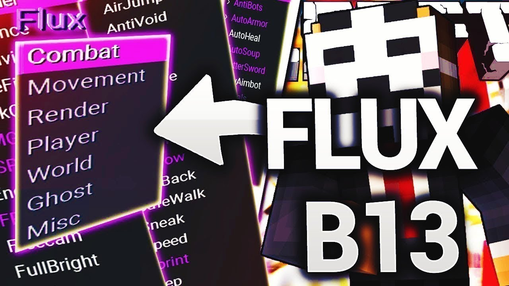

Flux b13 (1.8.8)

Чит Flux создан для самых заядлых читеров в Майнкрафте, не даром он считается самым лучшим читом в Майнкрафте на данный момент. Напоминаем, что версии b14 и b15 пока что не существует.
Установка:
1. Скачать и распаковать архив.
2. Перенести папку с читом в папку versions.
Открытие меню на правый Shift.
Kirka X (1.8)
Чит Kirka X — является последней и самой лучшей, на данный момент, версией данного чита. Он уже покоряет сотни серверов, позволяя игрокам на них использовать крутые и невероятные читы.
Установка:
1. Скачать и распаковать архив.
2. Перенести папку с читом в папку versions.
Открытие меню на правый Shift.
SkillClient (1.13)
SkillClient - это чит клиент майнкрафт, сборник большого количества разных читов для игры майнкрафт, он создан для получения преимущества над игроками на серверах. Содежит приятный и удобный интерфейс.
Установка:
1. Скачать и распаковать архив.
2. Перенести папку с читом в папку versions.
Открытие меню на правый Shift.